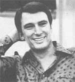
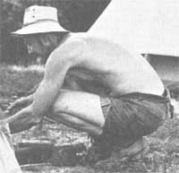

In 1964, years before the back-to-the-land movement had begun to amount to anything, a young woman named Anne LaBastille moved into a log cabin on the shore of an isolated lake in New York's Adirondack Mountains. The cabin stood a full 10 miles from the nearest settlement, and the young woman had built the edifice herself.
Today, Anne LaBastille still lives in that rugged cabin, beside that remote lake which has no access road. And her wilderness surroundings are perfectly suited to her work as an ecological consultant, lecturer, writer, and photographer.
Anne holds a Ph.D. in wildlife ecology, and has carved out a hard-earned place for herself in that field ... first locally and now internationally. She's made ecological studies in the United States, Central America, and South America. In 1974 she was awarded a World Wildlife Fund Gold Medal for Conservation, and she's now a juror for the J. Paul Getty Wildlife Conservation Award. Ms. La Bastille is also an appointed commissioner of the recently established land use program, the Adirondack Park Agency, and her written work has appeared in such magazines as International Wildlife, Backpacker, Reader's Digest, and National Geographic. In addition to that, she's recently published her first book, appropriately titled Woods woman.
Anne's always prepared to leave home on short notice in order to go out on assignment. Sometimes this calls for quite a struggle with an icy mid-winter environment, when she must pack her gear, close the cabin, and head out on snowshoes for her pickup truck, parked at a landing a mile and a half across the frozen lake.
It might seem strange to some that such a professionally active person should subject herself to so many domestic hardships. But-to Anne-it's very simple. "This is my home," she says, "the place I can always come back to. Here I can be perfectly alone and undisturbed to focus on my thoughts, and here I can be at peace."?Nancy Tucker.
Werner Gerhard has been a controversial figure for nearly six years ... or ever since his nationwide Erhard Seminars Training organization (now officially titled est, an educational corporation) got off the ground in San Francisco.
He's derided by some as a "self-styled Western guru" for his unabashed campaign to raise national-and ultimately world- consciousness through his unorthodox training sessions. But few can find cause to belittle his current pet endeavor: It's called The Hunger Project, it was initiated in the spring of 1977, and it presently has an enrollment of over 70,000 individuals in 29 different countries (est graduates and non-graduates alike).
Simply put, the purpose of The Hunger Project is to bring about the end of starvation within 20 years. Erhard is confident that The Project will achieve its goal, and he makes a convincing argument to support his optimism.
"I'm not an expert on hunger and starvation," he begins. "The little bit of knowledge I've acquired in four years of study is small compared to the knowledge of the true world hunger authorities I've worked with, like Buckminster Fuller or Roy Prosterman. But I can see that-precisely because the impact of starvation on all our lives is so great-its existence is actually an opportunity ... to get beyond merely defending what we have, beyond the futility of self-interest, beyond the hopelessness of clinging to opinions and making gestures,
"In fact, in experiencing the truth underlying hunger, one comes to realize that the ordinarily unnoticed laws that determine the existence of hunger on this planet are precisely the laws that keep the world from working. And the principles of the end of hunger in the world are the very principles necessary to make the world work."
Werner tells audiences that sometime soon "some opportunity to do something to end starvation on the planet will cross your path". And he urges that everyone open his or her eyes to the variety of actions that can be taken ... by contributing time and money to The Project, or supporting those who are directly involved in the cause, or fasting one day each month (the 14th is the est-designated day), or working with other anti-hunger organizations, or offering his or her own skills and knowledge to starving people.
"Soon there will be over 100,000 people enrolled in The Hunger Project ... people committed to causing the end of hunger and starvation in two decades," Werner declares. "We have no idea what a group of 100,000 aligned people can do, and I say that any attempt to predict it limits it. So I only predict miracles.
"Twenty years from now, when we're looking back at how hunger and starvation ended, It won't look as if miracles happened. Everyone will know how it happened. They'll point to events that were pivotal, that made a difference. There will appear to be an obvious relationship between what was done and the logical consequences of what was done. The weather got better ... there were bigger crops ... this government changed ... the president said that ... the government did this ... and it all resulted in the end of starvation on the planet. In retrospect, that's how miracles always appear to happen. "-SN.
[Copies of The Project's source document may be ordered by writing to The Hunger Project, P.O. Box 789, San Francisco, Calif. 94101. Please enclose a tax-deductible $1.50 donation for each copy, to cover the cost of production and mailing. -The Editors.]
"I've been lucky," says banjo picker Pete Seeger. "Every time anyone any where in the world plays 'If I Had a Hammer', I get another penny. So I can afford to work 10% of the time and spend the other 90% doing what's important."
What Pete calls important is not his successful career but his determination to clean up America's waterways. And the performer has made it his business to tackle first the overwhelming job of restoring purity to the badly polluted Hudson River.
Seeger devotes most of his time to just that effort. He's one of the original promoters of the Clearwater, a 76-foot Hudson River sloop replica that sails up and down the Hudson, focusing public attention on the need for that river to run clean again.
''I'm just one of 5,000 volunteers who help keep Clearwater afloat," is his modest comment.
Right now the folk singer is hard at work in a Maryland boatyard, helping to build a 32-foot ferro-cement version of the Clearwater. The new boat belongs to the Hudson River Sloop Club of Beacon, New York, which will use the vessel to encourage local interest in clean water. When he's not performing, Pete volunteers most of his time to the sloop project, following the same 10-hours-a-day schedule kept by the paid boat-builders working alongside him.
The new craft will use an experimental composting toilet that combines human waste with dry earth and peat moss. The whole mass of organic matter is then dehydrated by means of air ducts that vent atop the hollow mast. The result-after a mellowing period of some six to twelve months-will be an excellent fertilizer.
It's going to take more than composting toilets, though, to clean up our waterways. The question is: Can a band of ecology-minded sailors help turn the tide so that environmental safeguards will be enforced and better legislation enacted?
Pete Seeger thinks so, even though many of the experts in the field fear that it's already too late. "I tell those scientists that I'm not as pessimistic as they are," he says. "I've seen people turn their heads around in an hour, and I do believe the human race can do something to save itself.
"As an old English general once said, 'We rarely see the handwriting on the wall until our backs are against it.' " According to Pete, our backs are already against the wall ... and the handwriting is plain for all to see.?John Kabler.
Are you up on the latest doings of someone (such as any of those innovative pioneers featured in MOTHER'S Plowboy Interviews) who's achieved recognition in a field regularly covered by this magazine? If so, send us a tightly written 200-word report on that person (along with a clear, snappy black-and-white photograph), and providing your report is used in NEWS WORTHIES?we'll gladly send you a flat $50 ($25 without that photograph). Send your contributions to NEWSWORTHIES EDITOR, THE Mother Earth News' P.O. Box 70, Hendersonville, N.C. 28739.
|
|
|
 |
|
 |
|
|